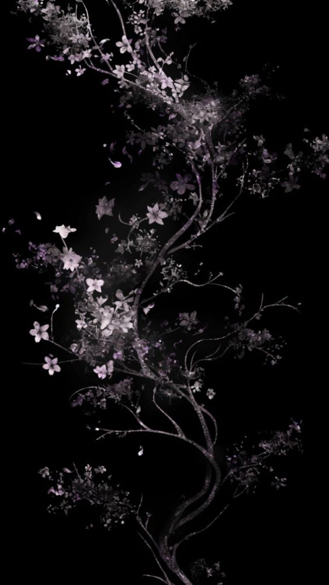

Week 05
UI polishing and CSS improvements for cleaner code and better styling.
Task
UI Polishing
Colors, spacing, and font sizes optimized.
Task
Figma Prototype
Prototype refined to resemble a real train info app.